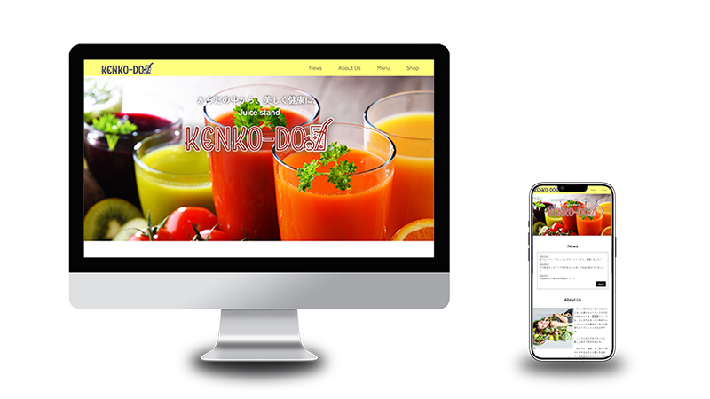

Juice stand KEKENKO-DO

Scroll
概要
「健康堂」というタイトルのみが予め決められており、そこから自由にイメージを膨らませてWEBサイトを作りました。
日頃、仕事が忙しく野菜や果物を十分に摂れていないと感じている人々に、ジュースで手軽に栄養補給をするという選択肢を提示し、おいしくて栄養豊富な生絞りジュースを扱う自店への来店を促します。
サイトを見る（新しいページが開きます）＞サイトの目的
店舗の認知度向上と集客
担当箇所
コンセプトの設定と、デザイン＆コーディング全般
ターゲット
20～40代の働く女性
製作期間
3週間（2023年9～10月）
制作のポイント
基本の色は白・黒・黄色でシンプルな構成にしつつ、画像は彩度を高く色鮮やかなものを使用することで、スタイリッシュかつ健康的で瑞々しい印象のページに仕上げました。
商品のこだわりやアピールポイント、利用のメリットについてはクリックで文章が展開するアコーディオン式にすることで、ページが冗長にならないようにしています。また、「自分で情報を見つける」という体験を挟むことにより、流し読みを防ぐねらいがあります。